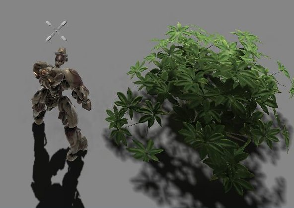
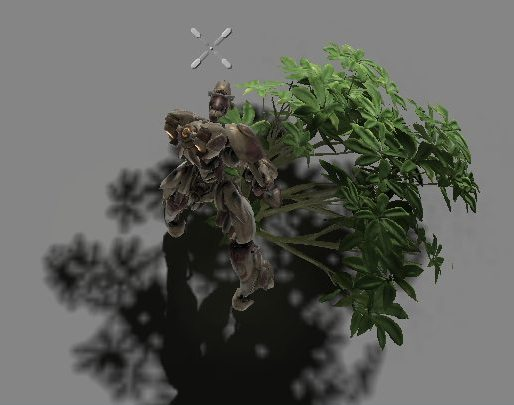
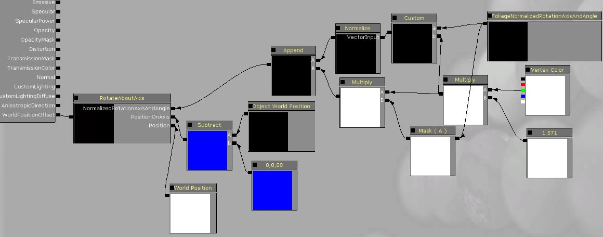
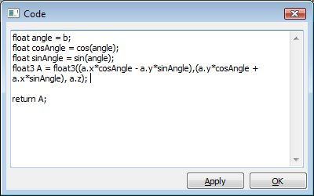

UDN
Search public documentation:
InteractiveFoliageActor
日本語訳
中国翻译
한국어
Interested in the Unreal Engine?
Visit the Unreal Technology site.
Looking for jobs and company info?
Check out the Epic games site.
Questions about support via UDN?
Contact the UDN Staff
中国翻译
한국어
Interested in the Unreal Engine?
Visit the Unreal Technology site.
Looking for jobs and company info?
Check out the Epic games site.
Questions about support via UDN?
Contact the UDN Staff
UE3 Home > Static Meshes > InteractiveFoliageActor
InteractiveFoliageActor
Document Changelog: Created by Daniel Wright.
Overview
Simple Setup
- Select a static mesh in the Content Browser. Collision is not required on the static mesh.
- Right click in an editor viewport and select Add Actor -> Add InteractiveFoliageActor
- Apply a material setup to use FoliageNormalizedRotationAxisAndAngle affecting WorldPositionOffset.
Simple Material Setup
The subtract from Object World Position is to move the point that gets rotated down in world space. With this setup you can now push a bush out of the way, and it will spring back into place once you stop applying forces to it.  
Of course screenshots don't relay animation very well, so these videos show the result better.
WalkingThroughFields.mp4
Explosions.mp4
Advanced Material Setup
As an example here is a material which uses an offset from vertex color to change the rotation axis for different parts of the mesh. 
The Custom node in the material above is: 
Here's a video of the material in action. Note how different parts of the mesh rotate in different directions when you touch it. This is useful for foliage types where you just want them to move around ambiguously when you touch them and not in a specific direction. AdvancedAnimation.mp4
Be sure to use this in conjunction with some ambient wind animation for best results. The WindDirectionAndSpeed node is useful for coordinating wind animation between objects.
Spring Physics Settings
- FoliageDamageImpulseScale - Scales forces applied from damage events.
- FoliageDamping - Determines the amount of energy lost by the spring as it oscillates. This force is similar to air friction.
- FoliageStiffness - Determines how strong the force that pushes toward the spring's center will be.
- FoliageStiffnessQuadratic - Same as FoliageStiffness, but the strength of this force increases with the square of the distance to the spring's center. This force is used to prevent the spring from extending past a certain point due to touch and damage forces.
- FoliageTouchImpulseScale - Scales forces applied from touch events.
- MaxDamageImpulse - Clamps the magnitude of each damage force applied.
- MaxForce - Clamps the magnitude of combined forces applied each update.
- MaxTouchImpulse - Clamps the magnitude of each touch force applied.
Limitations
- Currently InteractiveFoliageActor's block projectile weapons, since those do not yet respect PassThroughDamage.
- Since WorldPositionOffset is used for animation, all the limitations of that apply. InteractiveFoliageActor's provide a visual-only effect.
Performance Implications
Troubleshooting
You can simplify the material to plugging in FoliageImpulseDirection into Emissive to debug whether the direction is changing when you touch it.
If your actors are not being affected by explosions, make sure their actor Location is above the ground. Explosions do line checks to each actor's Location before applying damage. You can see where the actor's Location is by where the movement widgets are drawn when selecting it in the editor. You can move the Location higher on the mesh by applying a PrePivot to the actor (under the Display category) and then translate the mesh back to compensate.